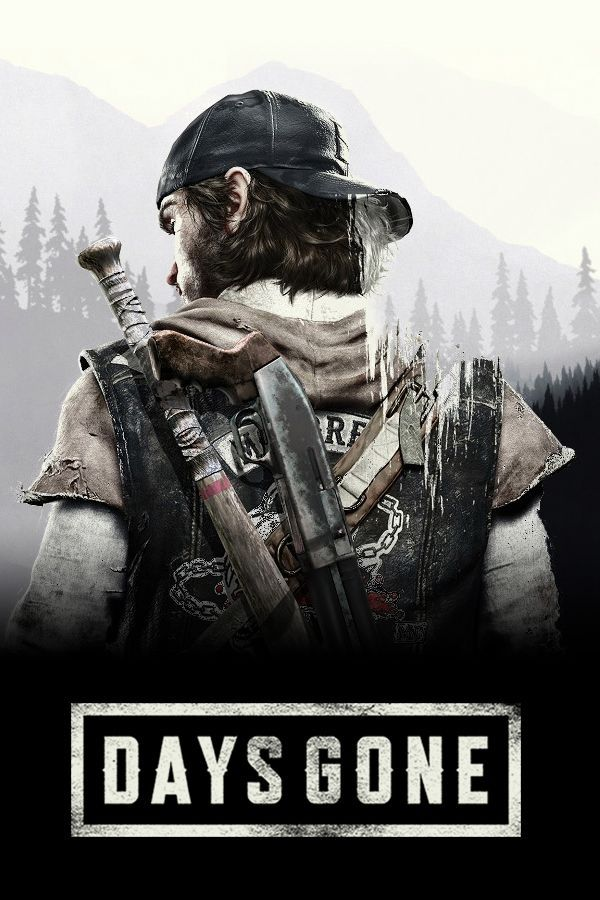

Days Gone é um jogo de ação, aventura e sobrevivência em mundo aberto. Você assume o papel de Deacon St. John, um ex-motoqueiro e caçador de recompensas que percorre estradas perigosas após uma pandemia devastadora. Em meio a hordas de infectados, grupos hostis e recursos limitados, Deacon luta para sobreviver e descobrir o destino de sua esposa.
Nota: 9,0
Gênero: Ação, Aventura, Terror e Sobrevivência
Desenvolvedora: Bend Studio
Publicadora: Sony Interactive Entertainment
Lançamento: 2019
Plataformas: PC e PlayStation 4
Modo de jogo: Single Player
Nível de Terror: 👻👻👻